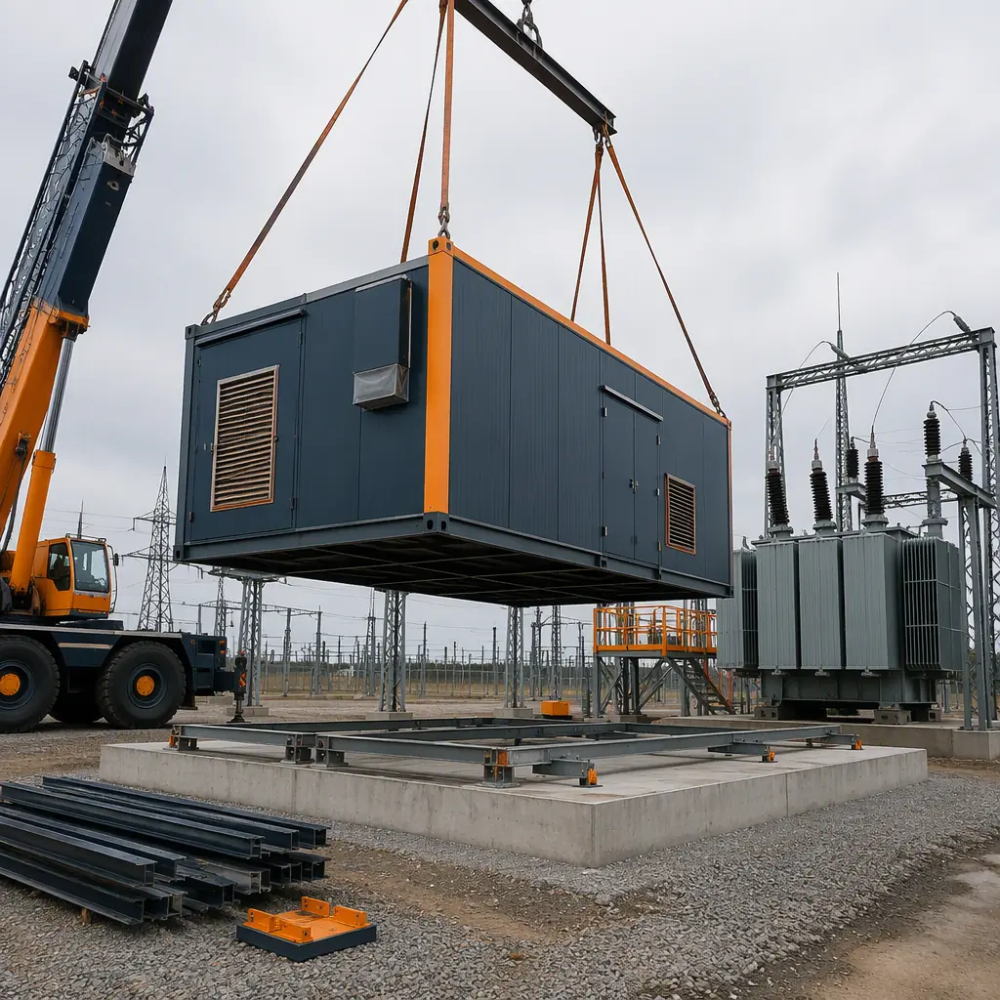
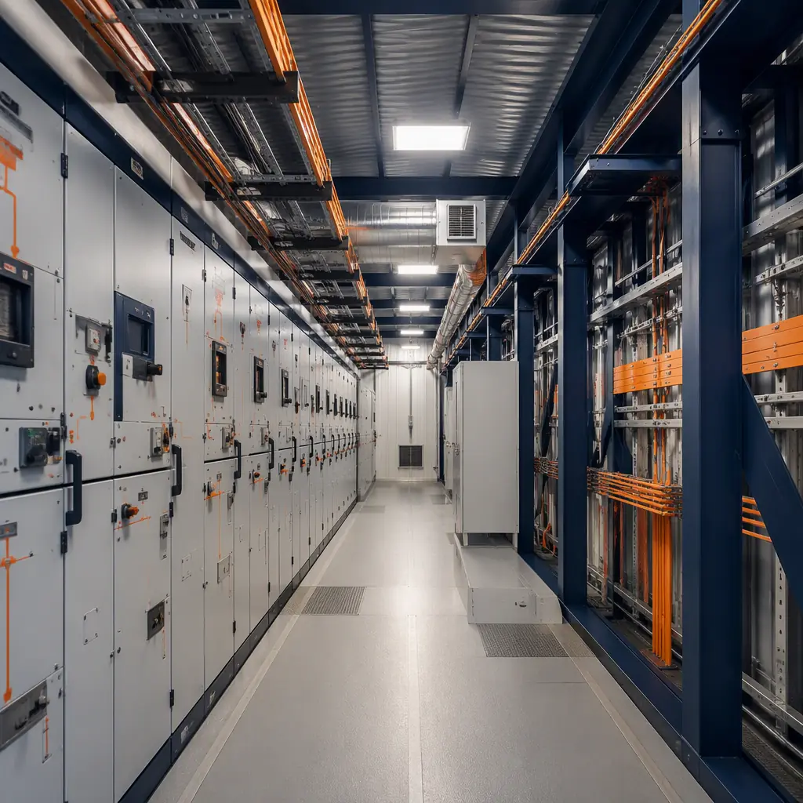
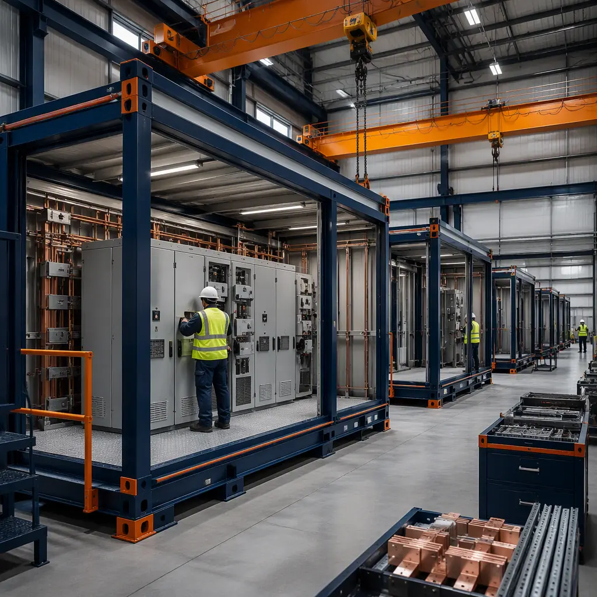
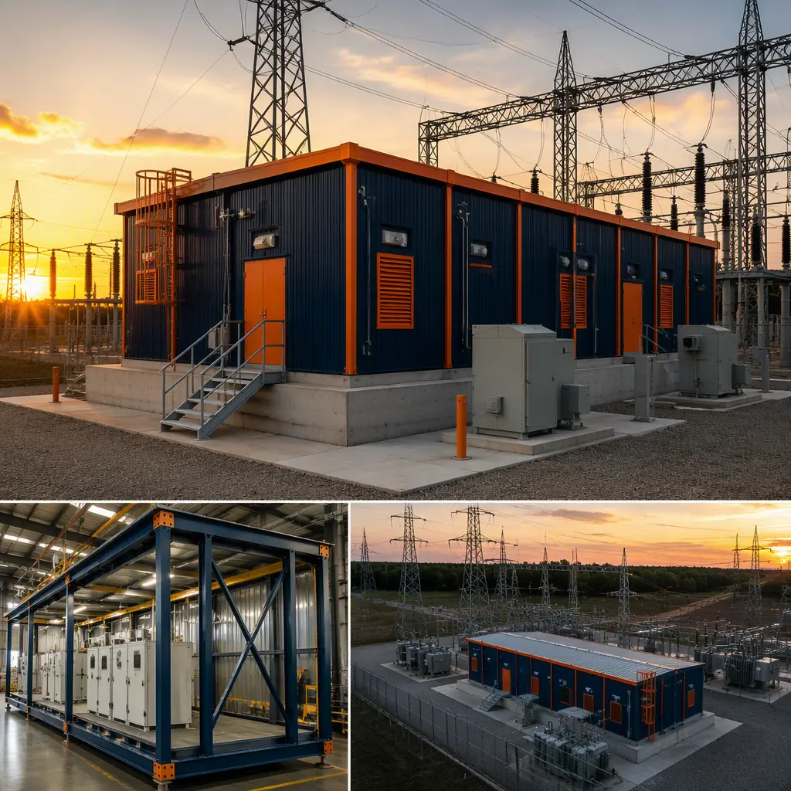

Every large electrical asset — a utility substation, a data center campus, a solar farm, a battery energy storage site, an EV fleet depot — needs a building to house its switchgear, and that building has quietly become one of the longest items on the project critical path. The industry is building grid infrastructure faster than at any point since the 1970s: U.S. utilities and developers added roughly 35 GW of utility-scale solar and storage capacity in 2025 alone, AI data center campuses are contracting multi-hundred-megawatt power loads, and distribution transformer lead times have stretched past a year at many manufacturers. Yet the typical switchgear enclosure is still delivered the old way: a masonry or concrete block building assembled on site over 6–12 months, with foundation, block walls, structural steel, roof, HVAC, fire suppression, and electrical installation running as sequential trades. Modular construction collapses that building-side critical path to 10–14 weeks of factory production, because 70–90% of the work — including the switchgear installation itself — happens indoors, under controlled conditions, in parallel with foundation work. This guide explains the modern substation and switchgear building program, how factory-built electrical buildings satisfy utility-grade engineering requirements, and how owners and EPC contractors should specify and procure them.

Why Power Infrastructure Is Moving to Factory-Built Electrical Enclosures
Three pressures are pushing utilities and developers toward prefabricated electrical buildings. First is the equipment backlog: with switchgear and transformer deliveries extending 12–24 months, owners cannot afford to add another year of sequential site construction on top. A factory-built enclosure lets the building and the electrical installation progress while the owner waits on long-lead equipment, so the two supply chains converge instead of stacking. Second is inspection quality: electrical rooms built in the field are tested in the field, where a single missed torque, contamination event, or cold-solder joint can take down a feeder. In the factory, every connection is installed by a trained crew at a workstation and tested before shipment, under the same quality-gate discipline MODURA documents in our factory quality control guide. Third is schedule certainty: grid interconnection dates are now negotiated years in advance and penalties for missing them are real. A modular electrical building converts an unpredictable site build into a committed factory production schedule, which is exactly the certainty interconnection agreements require.
The building type itself is well established — the industry calls it a prefabricated electrical building (PEB) or, at smaller scale, a packaged substation enclosure. What has changed in the last decade is the scale of what is being packaged. Modern factory-built electrical buildings are not metal sheds; they are engineered structures up to 5,000 sq ft that arrive with medium-voltage switchgear, motor control centers, battery rooms, UPS systems, and SCADA racks installed, wired, and commissioned at the factory. For the broader structural logic behind factory-built steel buildings — tolerances, connections, envelope performance — our modular steel construction guide covers the engineering foundation these enclosures are built on.
The Switchgear Building Program: What a Modern Electrical Enclosure Requires
A utility-grade electrical building is a demanding structure, and the program varies by application. A typical walk-in enclosure for a 13.8 kV distribution substation or a data center medium-voltage yard breaks down as follows:
- Switchgear room (40–60% of area). Houses medium-voltage switchgear (13.8 kV or 34.5 kV class), with clearance and aisle spacing per NFPA 70 (NEC) and manufacturer recommendations — typically 4–7 ft working clearances in front of equipment and minimum 3 ft rear access.
- Transformers and service entrance (10–15%). Either pad-mounted outside or a dedicated transformer bay with fire-rated separation per the local authority having jurisdiction.
- Power distribution (10–15%). Low-voltage switchboards, panelboards, motor control centers, and metering sections, with busway or cable tray routing pre-installed in the factory.
- Battery and UPS rooms (5–10%). Seismic-rated battery racks with dedicated ventilation and spill containment — a common source of inspection failures on site-built rooms that factory design eliminates.
- Controls, SCADA, and communications (5–10%). Relay panels, RTUs, fiber termination racks, and station battery systems, factory-wired and point-to-point tested.
- Support spaces (5–10%). HVAC mezzanines, fire suppression equipment, and personnel access with security doors.
Every zone maps onto factory production. The switchgear room arrives with the main distribution board mounted, bus connections torqued to spec, and protective relay settings loaded — the owner receives a building that is already an electrical system, not an empty box waiting for a field crew. For a deeper look at how factory-built structures deliver the coordinated mechanical, electrical, and plumbing integration these rooms require, see our modular MEP integration guide.

Arc-Resistant Construction and NERC CIP Physical Security
Electrical buildings carry two compliance loads that modular construction handles with documentation. The first is arc-flash and arc-resistant construction: switchgear rated to IEEE C37.20.7 is designed to withstand internal arc faults up to 40–63 kA for 0.3–0.5 seconds, and the room around it must support that protection with pressure-relief vents, segregated cable entry, and fire-rated barriers. Factory-built enclosures are engineered with these provisions as standard: pressure relief panels are integrated into the module wall design, cable penetrations are fire-stopped at the factory, and the structural frame is designed so an internal arc event does not compromise the building envelope.
The second is physical security for critical grid assets. For facilities on the bulk electric system, NERC CIP standards (specifically CIP-006) require physical security controls on the cyber-asset housing — access control, monitoring, and barriers. A factory-built electrical building ships with these built in: ballistic-rated or reinforced exterior walls, hardened doors with electronic access control pre-wired, intrusion detection integration, and camera mounting provisions documented in the submittal package. Because every module ships with its full compliance documentation, the authority having jurisdiction and the compliance auditor receive a complete, testable record at day one instead of a fragmented site-built file. The broader compliance framework for factory-built construction, including how jurisdictions review pre-engineered assemblies, is covered in our permitting and zoning guide.
Factory Production: Pre-Wired, Pre-Tested, Shipped as a Complete Building
The economics of electrical buildings are dominated by testing and rework, both of which favor factory production. On a conventional site, electrical installation happens after the building shell is complete, in a sequence that can take 8–14 weeks: rough-in, wire pulling, terminations, then commissioning with the utility. In the factory, the switchgear room is assembled at a dedicated station where the electrical crew, the structure crew, and the HVAC crew work in parallel: the module frame is welded and painted, the electrical rough-in and equipment mounting happen on the line, and the complete system is powered up and tested — insulation resistance, megger tests, relay calibration, point-to-point checks — before the building is ever loaded on a truck. The result is that commissioning time on site drops from weeks to days, and the riskiest electrical work happens in a controlled environment where rework costs a fraction of what it costs in the field.
This is the same production-line logic that drives MODURA's factory quality system — weld verification, dimensional checks, and MEP testing at defined gates — which we document in our factory quality control guide. Weather independence matters here too: an enclosure being built for a substation in the upper Midwest or the desert Southwest does not lose schedule to frozen ground, monsoon rain, or 110°F days, because the factory floor is climate-controlled year-round. Even if the site foundation slips a month, the modules keep coming, and the site set window is measured in days, not seasons. The full comparison of factory-built versus traditional schedules is in our modular construction timeline analysis.

Foundations, Transport, and the Single-Day Module Set
The site story of a modular electrical building is deliberately short. Foundations are precast concrete plinths or spread footings cast while the factory builds the module, sized to the module's documented reactions — typically a 12–16 ft wide, 40–60 ft long module weighing 40,000–80,000 lb needs a simple reinforced pad, not a complex basement. On set day, a single crane lifts each module from the transport trailer, sets it on the plinths, and the interconnection crew bolts the units together, seals the joint, and makes the electrical and HVAC connections between sections. A two-module switchgear building is commonly set and weathertight in one day, with utility interconnection and final commissioning following over the next 1–3 weeks.
Transport is planned at the design stage: module width and length are set to avoid needing superload permits where possible, and the factory coordinates oversize-load routing and delivery windows as part of the production schedule. This logistics discipline — factory-to-site transport of large steel modules, delivery sequencing, and set-day coordination — is the same system MODURA applies to every project and is detailed in our transportation and logistics guide. Owners should verify their site access (road width, turning radius, overhead lines) before finalizing module dimensions, and should plan the laydown area for cranes and trailers the same way they would for any steel erection.

Cost and Timeline Benchmarks for Modular Electrical Buildings
For a typical 1,000–3,000 sq ft walk-in switchgear building, modular delivery lands at $180–320 per sq ft complete with HVAC, fire suppression, and interior electrical rough-in — compared with $300–550 per sq ft for equivalent masonry construction with field electrical installation. That 25–40% saving comes from three places: compressed schedule, factory labor rates versus site rates, and the elimination of weather-driven rework. The schedule is the bigger number: a modular electrical building is ready for equipment 8–10 months earlier than a site-built block building, which for an interconnection-driven project can be the difference between hitting a contracted energization date and paying liquidated damages.
| Benchmark | Site-Built (Masonry) | Modular (Factory-Built) |
|---|---|---|
| Design through energized | 12–24 months | 5–9 months |
| Building shell cost | $300–550 / sq ft | $180–320 / sq ft |
| Electrical install location | 100% in the field | 70–90% in the factory |
| On-site commissioning | 8–14 weeks | 1–3 weeks |
| Module set window | N/A (sequential trades) | 1–2 days per building |
| Relocatability | None | Full — can be re-deployed to a new site |
Total cost of ownership also favors factory-built enclosures. The envelope is factory-fabricated and tested, delivering the airtightness and insulation performance documented in our building envelope guide, which cuts the HVAC load that runs 24/7 in an electrical room. The building can be relocated when a substation is retired or a data center campus expands — a re-deployment value that site-built block rooms simply do not have. Full lifecycle cost modeling across building types is covered in our total cost planning guide, and per-square-foot benchmarks are in our modular construction cost guide.
In an interconnection-driven world, the building is no longer the part of the project you can let drift. A factory-built electrical enclosure turns the most inspection-heavy, schedule-sensitive building on the site into the most predictable one — delivered complete, tested, and documented, with the schedule committed in a contract.
Procurement: Specifying a Modular Substation or Switchgear Building
Specifying a modular electrical building is different from specifying a site-built one, and getting it right protects the schedule. Owners and EPCs should: (1) define the electrical program before procurement — voltage class, fault current, equipment list, and clearance requirements — because the module layout is driven by the switchgear, not the other way around; (2) require bidders to document their factory testing plan, not just their construction schedule, including the megger, relay, and point-to-point tests that will be performed before shipment; (3) confirm the module manufacturer coordinates with the switchgear supplier, since the switchgear is typically factory-installed and the two schedules must align; and (4) structure the payment schedule around factory milestones — design release, steel fabrication, equipment installation, factory test, shipment — because that is where the value is created. Our modular RFP and procurement guide walks through the complete solicitation structure, and our bid comparison guide explains how to evaluate modular proposals against conventional ones on an apples-to-apples basis.
On the delivery side, owners should verify early that the local building department and the utility's interconnection engineers accept factory-built electrical assemblies with third-party inspection — most jurisdictions and utilities now do, and acceptance is accelerating as more grid infrastructure is delivered this way. Buyers applying this approach to a data center or a fleet charging campus should also review our modular data center construction guide and EV fleet charging depot guide, which cover the power infrastructure programs those facilities share with utility substations.